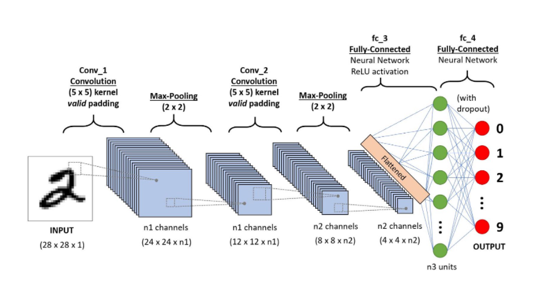
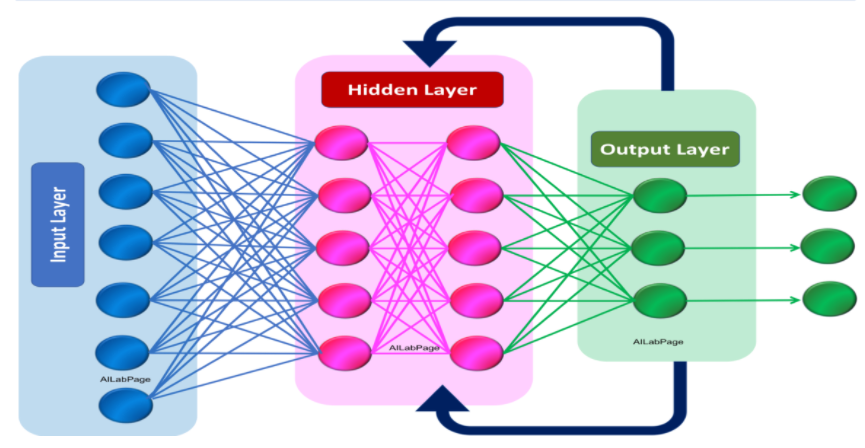
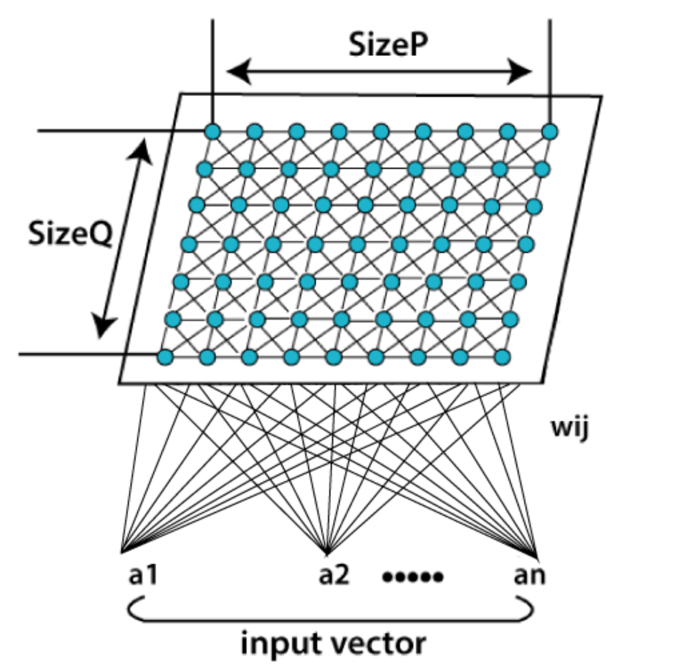
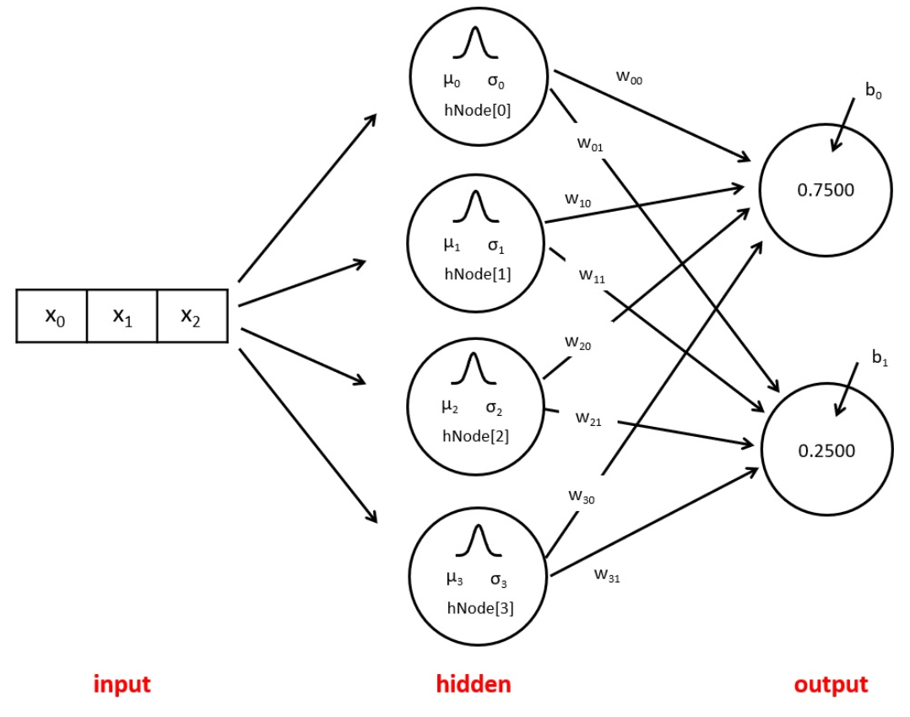

A Convolutional Neural Network (ConvNet/CNN) is a Deep Learning algorithm which can take in an input image, assign importance (learnable weights and biases) to various aspects/objects in the image and be able to differentiate one from the other. The pre-processing required in a ConvNet is much lower as compared to other classification algorithms. While in primitive methods filters are hand-engineered, with enough training, ConvNets have the ability to learn these filters/characteristics.
Recommendation: Convolutional Neural Network Recurrent Neural Network(RNN) are a type of Neural Network where the output from previous step are fed as input to the current step. In traditional neural networks, all the inputs and outputs are independent of each other, but in cases like when it is required to predict the next word of a sentence, the previous words are required and hence there is a need to remember the previous words. Thus RNN came into existence, which solved this issue with the help of a Hidden Layer. The main and most important feature of RNN is Hidden state, which remembers some information about a sequence.
Recommendation: Recurrent Neural Network Kohonen Self-Organizing Neural Network refers to a neural network, which is trained using competitive learning. Basic competitive learning implies that the competition process takes place before the cycle of learning. The competition process suggests that some criteria select a winning processing element. After the winning processing element is selected, its weight vector is adjusted according to the used learning law (Hecht Nielsen 1990).
Recommendation: Kohonen Self-Organizing Neural Network Radial basis function (RBF) networks have a fundamentally different architecture than most neural network architectures. Most neural network architecture consists of many layers and introduces nonlinearity by repetitively applying nonlinear activation functions. RBF network on the other hand only consists of an input layer, a single hidden layer, and an output layer.The input layer is not a computation layer, it just receives the input data and feeds it into the special hidden layer of the RBF network. The computation that is happened inside the hidden layer is very different from most neural networks, and this is where the power of the RBF network comes from. The output layer performs the prediction task such as classification or regression.
Recommendation: Radial Basis Function Neural Networks 